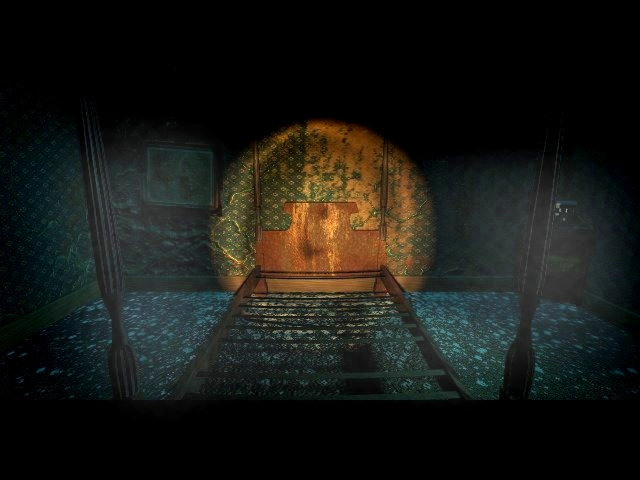
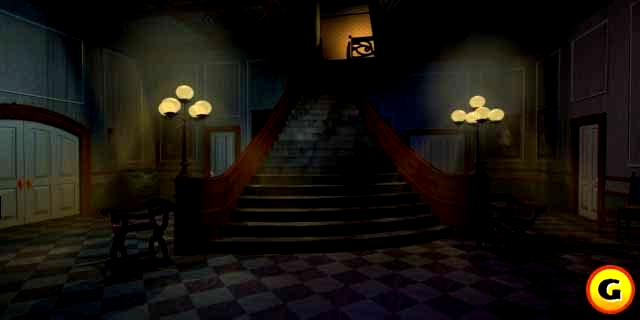

"If only I could find a matching ear..."
There is a storyboard of the intro available. You can check it out here. That's all I know about Trilobyte's Seventh guest 3. These screenshots below are according to Gamespot from the third installment, Robert Stein III thinks that they're from a version of the seventh guest for the Genesis, a version that never got finished.
 The main hall
 The dining room
The dining room
But there's more. Virgin, the publisher of the seventh guest had some rights
and secretly they were trying to make a part three on their own. A project called
'The thirteenth warrior (or soul I'm not sure) it was an assignment from Virgin
to a company called 'Legend software'. They made it based on the Unreal engine.
For some reason it never got far. This information was confirmed by the president
of 'Legend Software'.
But the most promising 'project' is called 'the Collector' . Rob Landeros, the designer who left Trilobyte a couple of years earlier has a lot of rights to the seventh guest and the 11th hour. Now he's working on the design for the third installment. Lunny Interactive, a new company, will be developing the game once Landeros has found full funding for it. For now it's the best chance the world has for a third installment. For more information check out the The Collector Fansite.